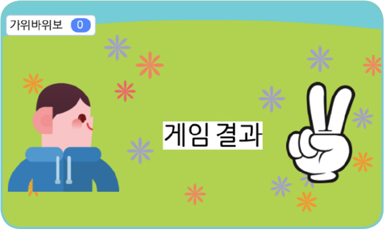
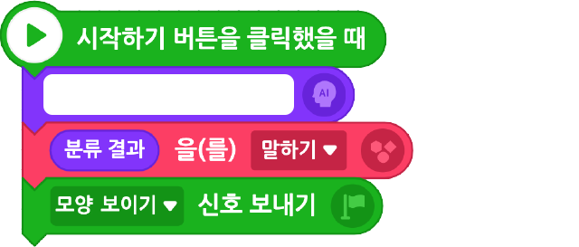
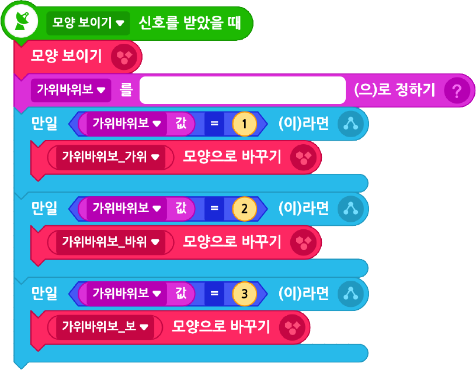
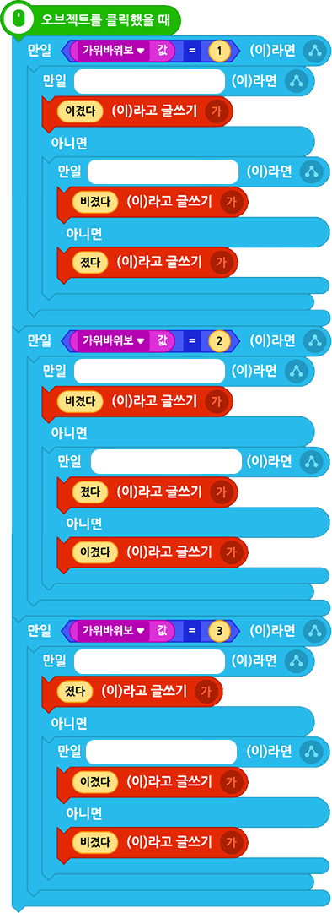

앞에서 만든 ‘손 모양 분류 인공지능’ 모델을 이용해 컴퓨터와 가위바위보 대결을 하는 프로그램을 작성해 보자.
실행 화면

- 오브젝트
-
가위바위보
얼굴
게임 결과(글상자)
꽃밭(3)
- 변수
-
가위바위보
- 신호
-
모양 보이기
아래 블록을 참고하여 프로그램을 작성해 보자.
카메라로 촬영하여 인공지능 모델로
분류하고 그 결과를 말한다.
얼굴(사람)

손 모양을 무작위로 저장한다.
변숫값에 따라 손 모양이 바뀌게 한다.
가위바위보(컴퓨터)

클릭하면 승패가 보이도록 한다.
게임 결과

화면의 크기를 좌우로 조절하면 블록을 크게 볼 수 있어요.
이전
다음